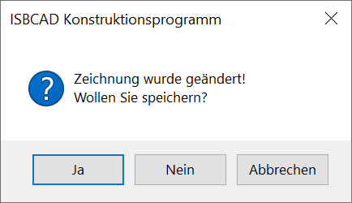

Alternativer Aufruf: Tastenkombination Alt+F4.
Beendet die Bearbeitung der Zeichnung und schließt das Programm. Sie können ISBCAD auch über das in der rechten oberen Ecke des Programmfensters beenden. Wenn der aktuelle Stand der Zeichnung noch nicht gespeichert wurde, erscheint eine entsprechende Meldung.
 |
Ja
Öffnet den Dialog Zeichnung speichern. Im Dialog können Sie den Dateinamen und den Speicherpfad der Zeichnung eingeben.
Nein
Die Zeichnung wird, ohne zu speichern, geschlossen. ISBCAD wird ebenfalls geschlossen.
Abbrechen
Der Vorgang wird abgebrochen und Sie kehren wieder zur Zeichnung zurück.